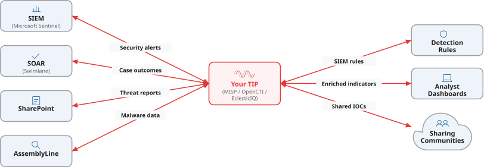

Our developers are seasoned security engineers who understand CTI analysts’ needs. They build tools that save your team time — from feed processors to analyst dashboards. If you have an idea for a tool, we can make it happen.
Tell us what you need built
We build entire platforms from scratch — e.g. Atraxium, a fraud data sharing platform used across APAC. If you can describe what you need, we can build it.
Purpose-built tools for CTI workflows — from feed processors to analyst dashboards. Our developers understand security and the needs of CTI analysts.
Get CTI data into the platforms that need it. We help you deploy existing connectors or create new custom integrations.
Automate repetitive CTI tasks — triage, enrichment, dissemination. Natively within your tool if supported, or as a plugin that adds automation.
If it has an API, we can connect to it. We’ve been building security integrations for the last 8 years.
Many CTI teams use a TIP at the core of their operations — whether that’s MISP, OpenCTI, EclecticIQ, or another platform. We help you create integrations between your security tools and your TIP so threat intelligence flows automatically into your detection and response workflows.
Examples of platforms we integrate: MISP, Microsoft Sentinel, EclecticIQ Intelligence Center, Swimlane SOAR, AssemblyLine, Microsoft SharePoint.

Already using a TIP, or planning to? We can help you get your platforms connected and your threat intelligence flowing to the systems that need it.
Discuss platform integrationIf there’s functionality you want to add to your existing security tools, we can build that too. We’re threat intelligence platform experts, but we can make plugins for any technology — as long as it has an API, we can build a plugin that adds the functionality you need.
Discuss your plugin needsWe build plugins that extend your existing platforms with new functionality — whether it’s a MISP module, an OpenCTI connector, or an extension for your SOAR.
Automate workflows within your favourite security tool, either natively or as a plugin. Reduce manual effort and let your analysts focus on analysis.
Add AI-powered analytics to your existing platform — from automated triage to pattern detection. We build ML capabilities that work inside your existing tools.
Connect any two platforms that expose an API. We’ve been doing this for 8 years and can learn new platforms quickly.
Automatically enrich indicators with context from external sources. We build enrichment modules that plug directly into your TIP workflow.
It’s all about connecting your security tools into a unified system. Make sure that the information you have is usable in the places it needs to be. Make CTI actionable.
Whether it’s an integration or a custom tool, we build it the same way — tested, version-controlled, and designed to run reliably without hand-holding.
Discuss your project
Yes. We build custom integrations that connect your existing security tools to MISP. Whether you need to ingest threat feeds, push indicators from your SIEM, or automate the flow of intelligence from your SOAR — we can build the integration that makes it happen.
We work with MISP, OpenCTI, EclecticIQ Intelligence Center, and other STIX/TAXII-compatible platforms. We’re TIP experts — MISP is our strongest area, but we can integrate with any platform that exposes an API or supports standard protocols.
We write production-grade Python, TypeScript/JavaScript, C#, and Rust — plus Bash and shell scripts where they’re the right tool for the job. Python for data pipelines and integrations, TypeScript and JavaScript for web applications and APIs, C# for .NET environments, Rust where performance and reliability are critical, and Bash for automation, deployment scripts, and gluing systems together. If your team already works in one of these languages, we can write code that fits naturally into your existing codebase.
We build CI/CD pipelines for all major platforms, including GitHub Actions, GitLab CI/CD, Azure DevOps, Bitbucket Pipelines, and Jenkins. We set up automated testing, builds, and deployments so that the tools and integrations we create for you are reliable and easy to maintain from day one.
We follow secure development practices throughout the software lifecycle. That includes secrets scanning, dependency vulnerability scanning, static analysis, automated testing, and code review. Everything we build comes with CI/CD pipelines, so you get repeatable builds and deployments — not a manual process that only works on one person’s laptop.
If it has an API, yes. We’re TIP experts — we’ve built MISP modules, OpenCTI connectors, and EclecticIQ extensions — but we can also build plugins for any technology that exposes an extension point or API.
Yes — either natively within your tool or as a plugin. We build automated workflows for triage, enrichment, dissemination, and more. We also build AI/ML-powered analytics that can be embedded directly into your existing platforms.
It depends on the platforms involved and the complexity of your data flows. A straightforward API-to-API integration might take a few weeks. More complex integrations involving custom data mapping, multiple systems, or specific intelligence standards typically take longer. We scope each engagement individually and give you a realistic timeline upfront.

Tell us about your CTI tool integration needs and we’ll get back to you as soon as possible.